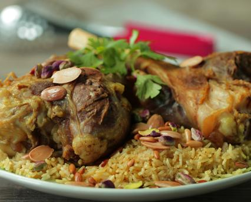

Kabsa

What is Kabsa?
Kabsa is the national dich of Saudi Arabia.
Ingredients
- 800g of Skinned chicken breast
- 1 tbsp of Oil, sunflower, linoleic (less than 60%)
- 3 tbsp of MAGGI® Khaleeji Cooking Paste
- 1 Small Carrot, cut into small pieces
- 1 Medium Potato, chopped
- 2 cups of Basmati rice
- 5 cups of Water
- 4 tbsp of Mixed nuts, toasted
- 2 Medium Tomatoes, diced
- 2 Medium Diced Cucumber
- 20g of Fresh parsley, chopped
- 6 Leafs of Lettuce, finely chopped
- 2 tbsp of fresh lemon juice
Steps
Step 1
- In a nonstick rice pot, sear chicken pieces with sunflower oil on medium-high heat until fully cooked.
Step 2
- Add MAGGI®Khaleeji Cooking Pasteand cook for an additional 2 minutes.
Step 3
- Add carrots, potato, water and rice, cover and simmer over low heat until water is absorbed and rice is fork tender.
Step 4
- Transfer to a serving dish and garnish with toasted nuts. Serve alongside fresh yogurt and mixed salad.